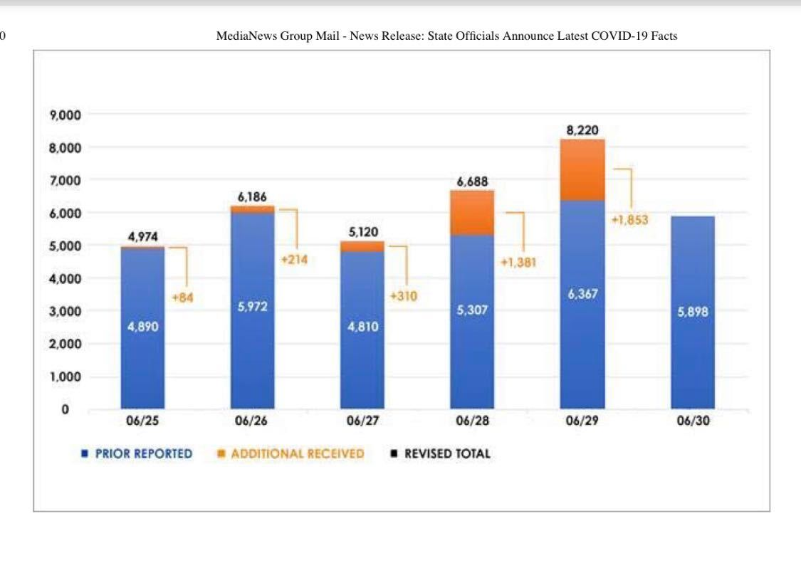
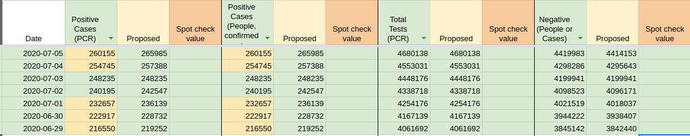

[CA Historicals] 7/1 California backfilled test information from the last few days
State or US: California
Describe the problem On 7/1 CA reported ~9k tests;, but actually some were from yesterday, some from the day before that etc.
Link to data source 
muamichali added the label Data quality on July 2, 2020 at 5:47 am
space-buzzer commented on July 2, 2020 at 8:04 pm
The numbers keep changing, we can patch now and repeat later, as needed. I don’t know whether it’s a process change from what they’ve been doing
space-buzzer commented on July 17, 2020 at 10:47 am
This stabilized now, so we’ll backfill with the numbers displayed on the dashboard now.
The fields that changed are: Positive Cases (PCR),Positive, Negative
2020-07-05 | 260155 | 265985 | – | – | – | – 2020-07-04 | 254745 | 257388 | 2020-07-03 | 248235 | 248235 | 2020-07-02 | 240195 | 242547 | 2020-07-01 | 232657 | 236139 | 2020-06-30 | 222917 | 228732 | 2020-06-29 | 216550 | 219252 |

space-buzzer closed the issue on July 17, 2020 at 11:05 am
We have 5 values that differ between what’s currently reported by the state of California and CTPs data.
We’re also shifted by 1 day from CA’s published data